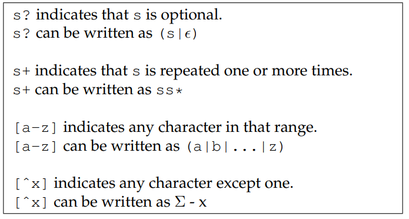

Scanning
Kind of Tokens
- Scanning is the process of identifying tokens from the raw text source code of a program.
Most languages will have tokens in these categories:
- Keywords
- Identifiers
- Numbers
- Strings
- Comments and Whitespace
A Hand-Made Scanner
- The basic approach is to read one character at a time from the input
stream (
fgetc(fp)) and then classify it. - Hand Made scanner is usually verbose.
- For a complex language with a large number of tokens, we need a more formalized approach to defining and scanning tokens. A formal approach will allow us to have a greater confidence that token definitions do not conflict and the scanner is implemented correctly.
- The formal tools of regular expressions and finite automata allow us to state very precisely what may appear in a given token type. Then, automated tools can process these definitions, find errors or ambiguities, and produce compact, high performance code.
Regular Expressions
- Regular expressions (REs) are a language for expressing patterns.
- They were first described in the 1950s by Stephen Kleene.

Note that ϵ represents empty string.

The syntax described so far is entirely sufficient to write any regular expression. But, it is also handy to have a few helper operations built on top of the basic syntax:
